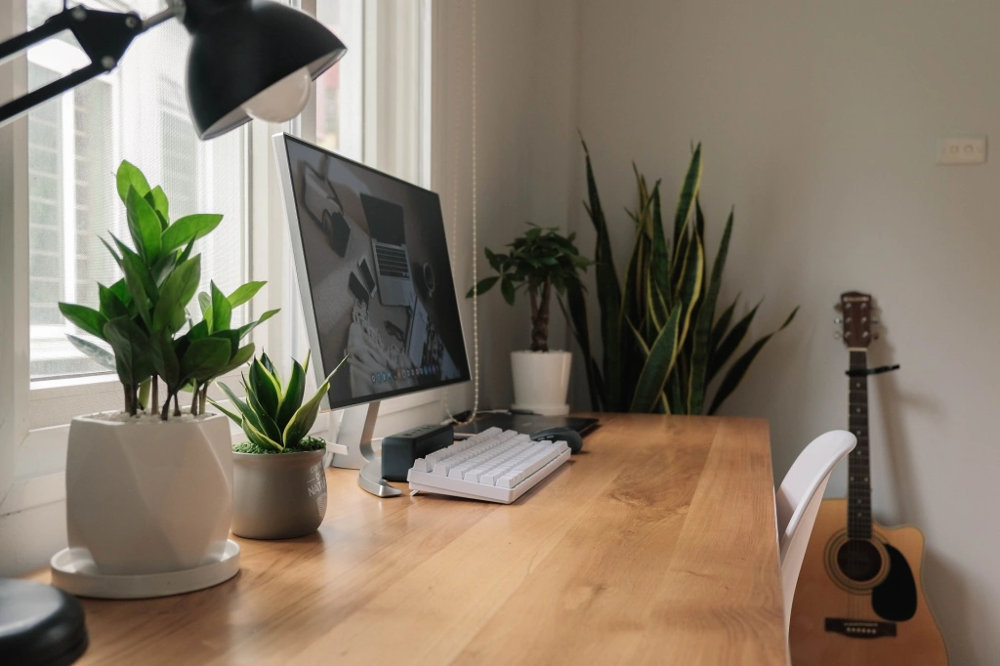

ĐI TÌM PHONG CÁCH SỐNG TỐI GIẢN RIÊNG CHO BẢN THÂN

Đã lâu rồi mình chưa viết về chủ đề lối sống tối giản. Nhận tiện đang ngồi viết script cho một bài phỏng vấn nho nhỏ sắp tới thì mình cũng tranh thủ sử dụng “idea” đó để viết blog luôn. Bài viết này có nội dung về việc làm thế nào để một cá nhân có thể tìm được một phong cách sống tối giản phù hợp cho riêng mình.
Chủ nghĩa tối giản là một khái niệm mở
Khi nhắc đến tối giản, mình tin là nhiều người sẽ hình dung đến một cuộc sống trong một căn phòng trống trải, ít đồ đạc, mang lại một cảm giác lạnh lẽo. Ngay cả khi nếu bạn có xem bức ảnh căn phòng của Sasaki Fumio, tác giả của cuốn sách nổi tiếng “Lối sống tối giản của người Nhật” thì bạn cũng sẽ thấy trong phòng của tác giả chỉ có một chiếc đệm trải sàn và một chiếc bàn gấp dùng để ăn hoặc làm việc. Nhiều người Việt có lẽ biết đến LSTG nhờ cuốn sách đó, nhưng cũng chỉ dừng lại ở cuốn sách đó, nên mới mang một ấn tượng chung chung về lối sống tối giản là “vứt bỏ”, “ít đồ” và “trống trải”.
Nhưng mình chắc chắn một điều rằng, cái mà mọi người đang nghĩ tới nó chỉ phản ánh một phần rất nhỏ của lối sống tối giản. Trên thực tế, không phải ai cũng là một “extreme minimalist” như Sasaki Fumio, không phải ai cũng là một minimalist thiên về vật chất, và không phải một minimalist nào cũng phải sống trong một căn phòng trắng bệch ít đồ đạc.
Như chị Chi Nguyễn đã viết trong cuốn “một cuốn sách về chủ nghĩa tối giản”,
“Chủ nghĩa tối giản là một khái niệm trừu tượng. Vì thế mỗi người sẽ có cách hiểu, định nghĩa và ứng dụng phong cách sống này khác nhau. Cá nhân tôi chọn nhìn nhận Chủ nghĩa tối giản theo một khái niệm mở. Đối với tôi, sống theo Chủ nghãi tối giản có nghĩa là đơn giản hóa cuộc sống, bỏ đi những thứ không cần thiết để chào đón những thứ cần thiết, có ý nghĩa hơn. Những thứ không cần thiết này có thể là vật dụng, đồ đạc hàng ngày, nhưng cũng có thể là những suy nghĩ tiêu cực, thói quen mua sắm dư thừa, những mối quan hệ không tốt, hay nói một cách dễ hiểu là tất cả những thứ không còn mang lại cho ta niềm vui và ý nghĩa sống”. (Trích trong chương 1 trang 19).
Chị Chi nhìn nhận LSTG là một khái niệm mở, và mình cũng vậy.
Đối với mình, lối sống tối giản không phải là đích đến, mà là một tiền đề, là một nền tảng vững chắc (solid foundation) để giúp mình có được một cuộc sống ý nghĩa hơn. Nó giống như việc bạn trồng một loại cây. Khi đó, gốc rễ hay hạt mầm chính là chủ nghĩa tối giản, và những nhánh cây vươn lên tượng trưng cho những điều có ý nghĩa trong cuộc sống.
Tóm lại, điều mình muốn nói ở đây là bạn không nên so sánh xem cái nào đúng cái nào sai, cái nào ít hơn cái nào nhiều hơn trong lối sống tối giản. Nếu bạn có tìm thấy bài viết nào đó về chủ nghĩa tối giản mà bạn cảm thấy nó không đúng với cách suy nghĩ của mình, thì bạn đừng vội quy cho nó là sai, thay vào đó hãy nghĩ rằng, “à người này có một cách suy nghĩ khác về minimalism”. Tất nhiên có vài trường hợp “quá sai” thì mình không nói, nhưng mình chắc chắn những người đó theo đuổi LSTG theo dạng phong trào và theo trend.
Mình là một Cozy Minimalist
Mình mượn ý tưởng và tên “cozy minimalist” từ cuốn sách “Cozy Minimalist Home” của Myquillyn Smith. Cuốn sách này viết về khái niệm “tối giản ấm áp” (cozy minimalism), một cách suy nghĩ giúp một cá nhân có thể tìm thấy được phong cách sống yêu thích với ít đồ đạc trong nhà.
Trích nguyên văn - “Cozy Minimalism isn’t about going without or achieving a particular new, modern style. Nope. It’s simply a mindset that helps you get whatever style YOU LOVE with the fewest possible items.”
“Cozy Minimalism” cũng được sử dụng nhiều trong lĩnh vực interior design (nội thất). Nó là một phong cách tối giản kèm theo một chút tính thẩm mỹ tạo nên một không gian ấm cúng và dễ chịu.
“Cozy minimalism works because it’s a happy medium. This look utilizes the best parts of a function-forward design and combines them with just enough aesthetic detail to make your interiors feel comfortable and welcoming.”– freshhome
Lấy ví dụ ngay chính căn phòng của mình. Từ khi lên ý tưởng thiết kế góc học tập và làm việc, mình đã hình dung đó sẽ là một không gian tối giản giúp bản thân tối ưu hóa năng suất công việc, nhưng cũng phải là nơi đem lại cho mình cảm giác hạnh phúc, ấm áp và khơi gợi nguồn cảm hứng. Sau khi đã đóng xong bàn, mình mua thêm vài chậu cây cảnh đặt trên bàn, và nó đem lại một cảm giác hoàn toàn khác so với trước khi không có gì.
Bạn cũng có thể biến một căn phòng trắng tinh ít đồ đạc mang cảm giác lạnh lẽo thành một “tổ ấm hạnh phúc” bằng những việc rất đơn giản như mua thêm một chậu cây đặt ở trong nhà, thay đổi màu ga giường từ trắng sang màu ghi hoặc be, thay đổi màu đèn từ trắng sang vàng, mua một chiếc nến thơm và đốt vào mỗi tối, giống như lối sống Hygge của người Đan Mạch.
Nói một cách dễ hiểu hơn thì phong cách cozy minimalism mà mình đang hướng đến chính là sự pha trộn giữa “Scandinavian” và “Japanese Minimalism”, hay cụ thể hơn, đó là một phong cách kết hợp giữa hai hãng nội thất nổi tiếng là IKEA và MUJI.
Nhưng đối với mình, cozy minimalism còn xuất hiện ở cả mặt tinh thần chứ không chỉ dừng lại ở mặt không gian vật chất. Khi nhắc đến lối sống tối giản trong tâm trí thì thường người ta hay nghĩ đến chuyện gạt bỏ những cảm xúc tiêu cực, những mối quan hệ không lành mạnh, những công việc không có giá trị để đón những điều có ý nghĩa hơn, ví dụ như một mối quan hệ chặt chẽ bền vững, những cảm xúc tích cực hay là một việc làm quan trọng có ích cho bản thân.
Đối với mình, sống tối giản không chỉ đơn thuần là gạt bỏ và giữ lại, nó còn giúp mình tập trung vào từng khoảnh khắc, giây phút hiện tại trong cuộc sống, giúp mình tìm kiếm được những niềm vui giản dị và ấm áp trong những điều nho nhỏ xuất hiện xung quanh. Mới ngay sáng nay thôi, khi đang ngồi cafe với bạn, trong một khoảnh khắc ngắn ngủi, mặt trời chiếu rọi vào trong quán, và mình để ý thấy những hạt bụi li ti đang lơ lửng trên không trung giữa ánh nắng, ngay lúc đó mình đã quay sang đứa bạn và kêu “em ơi nhìn mấy hạt bụi li ti lơ lửng giữa ánh nắng nè!”. Nhìn thấy nó mà mình cảm thấy thật ấm áp và nhẹ nhàng. Và vlog của mình luôn mang một phong cách như vậy, đơn giản không cầu kì, giản dị và ấm áp.
Nếu ví lối sống tối giản của mình với một món ăn nào đó thì mình sẽ chọn món Súp hầm sữa kiểu Nhật (Kurimu Shichu). Đó là một món hầm sữa với rau củ và thịt gà, cách chế biến rất dễ và rất hợp với những ngày mưa hoặc mùa đông. Ngày mai Hà Nội se lạnh một chút có lẽ là sẽ hợp để làm món này đây hehe.

Làm thế nào để có thể tìm được một phong cách tối giản cho riêng mình?
Như mình đã viết ở mục đầu tiên, chủ nghĩa tối giản là một khái niệm trừu tượng và mở, vì vậy mỗi người sẽ có một suy nghĩ và quan điểm riêng về lối sống này. Điều bạn nên làm đó chính là ngừng so sánh với người khác và tập trung vào lối sống tối giản của chính mình.
Ngoài ra, việc đọc sách và các bài viết chia sẻ về lối sống tối giản cũng rất quan trọng trong quá trình hình thành phong cách sống riêng cho bản thân. Như Joshua Millburn trong The Minimalists đã nói, “Hãy coi phong cách tối giản của những người khác như là một công thức nấu ăn. Bằng cách tập hợp và tham khảo nhiều công thức, bạn sẽ dần tìm ra được một công thức phù hợp với khẩu vị của mình”.
Mình nghĩ là nhiều người đọc xong cuốn “Lối sống tối giản của người Nhật” và bắt tay ngay vào việc thực hành lối sống tối giản, nhưng chưa chắc họ duy trì được lâu dài. Một cuốn sách không phản ánh hết được toàn bộ khái niệm về “minimalism”, điều đó đồng nghĩa với việc bạn chưa có cơ hội để hiểu rõ hơn về lối sống này. Vì vậy, hãy đọc thật nhiều sách viết cùng về chủ đề này.
Cá nhân mình suggest mọi người đọc thêm 3 cuốn ngoài cuốn của Sasaki Fumio, đó là “Một cuốn sách về chủ nghĩa tối giản” của chị Chi Nguyễn, “Nghệ thuật theo đuổi sự tối giản” của Greg McKeown và “Nghệ thuật tối giản” của “Dominique Loreau”. Ngoài ra, nếu vốn tiếng Anh của bạn tốt thì hãy tìm đọc những vài viết trên trang No Sidebar và Minimalism Life.Bạn sẽ tìm được rất nhiều nguồn cảm hứng cũng như là những “công thức” về chủ nghĩa tối giản mà bạn có thể tham khảo và áp dụng cho chính bản thân mình.
Stay focused, be present.
Kira